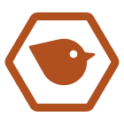
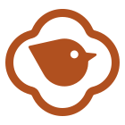
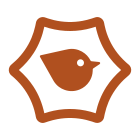
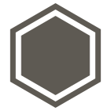

Kamon frame candidates
Step one and two of docs/direction-kamon-frame.md: each frame with Kikitori, Explorer and the brand's own motif, at app-icon size and at 16px, and the brand mark next to the hexagons it should not be mistaken for. The page follows the system's light or dark setting. Built by tools/explore_frames.py.
Wide hex (亀甲)
Calm and steady, and still a hexagon at 16px. The flat top and wider shape keep it apart from the pointy-topped hexagons of dev tools and crypto.
狐

千鳥
入れ子枡
Four lobes (木瓜)
The most like a real kamon and unlike any app frame. Below 24px the notches close up and it reads as a soft rounded square.
狐

千鳥
入れ子枡
Inset hex
The most striking: the bowed sides read as a seal or a badge more than a ninja star. At 16px the bow is gone and it falls back to a plain hexagon.
狐

千鳥
入れ子枡
Next to the hexagons to avoid
The three frames with the brand's fox, then plain stand-ins for the shapes the direction steers clear of, drawn from geometry rather than traced from anyone's logo: a solid pointy-topped hexagon as in dev-tool logos, a hex sticker as on R packages and laptops, and a thick sharp outline as on crypto tokens.
